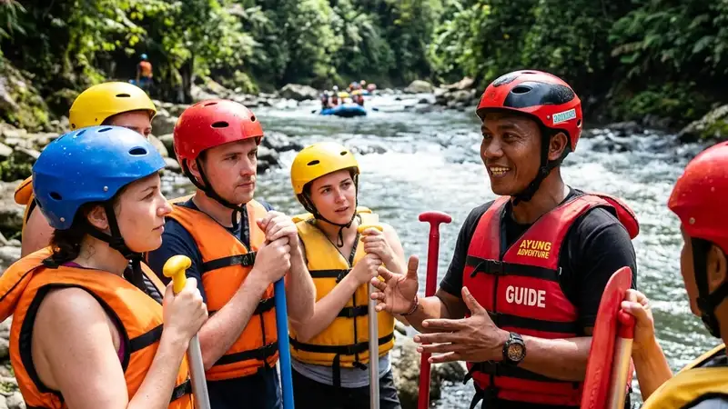

Aturan keselamatan rafting adalah kumpulan prosedur wajib yang meliputi penggunaan perlengkapan standar, briefing pemandu, dan sikap tubuh saat mengarungi sungai berarus deras. Aturan ini bertujuan menjaga peserta tetap aman sepanjang perjalanan.
- Perlengkapan keselamatan seperti jaket pelampung dan helm wajib dipakai sepanjang perjalanan.
- Briefing dari pemandu sebelum berangkat berisi instruksi dasar yang tidak boleh dilewatkan.
- Posisi duduk dan cara memegang dayung memengaruhi keseimbangan perahu.
- Kondisi fisik peserta perlu dipastikan sehat sebelum mengikuti rafting.
- Mengikuti instruksi pemandu selama di sungai adalah aturan paling mendasar.
Rafting merupakan aktivitas arung jeram yang memanfaatkan arus sungai sebagai medan utama. Karena berlangsung di alam terbuka dengan kondisi arus yang dapat berubah, aturan keselamatan rafting menjadi bagian yang tidak terpisahkan dari setiap penyelenggaraan wisata ini. Operator rafting yang bertanggung jawab umumnya menerapkan standar keselamatan sejak peserta tiba di lokasi hingga perjalanan selesai.
Artikel ini membahas aturan keselamatan rafting secara menyeluruh, mulai dari perlengkapan wajib, prosedur sebelum berangkat, sikap saat berada di perahu, hingga langkah yang perlu diambil dalam kondisi darurat.
Apa Itu Aturan Keselamatan Rafting
Aturan keselamatan rafting adalah serangkaian ketentuan yang mengatur perlengkapan, perilaku, dan prosedur peserta selama aktivitas arung jeram berlangsung.
Aturan ini umumnya mencakup penggunaan alat pelindung diri, instruksi dari pemandu berpengalaman, batas usia dan kondisi fisik peserta, serta prosedur darurat apabila terjadi situasi tidak terduga di sungai. Setiap operator rafting biasanya menyesuaikan detail aturan dengan karakteristik sungai yang digunakan, karena tingkat arus dan medan setiap lokasi dapat berbeda.
Mengapa Aturan Keselamatan Rafting Penting Dipatuhi
Aturan keselamatan rafting penting dipatuhi karena aktivitas ini berlangsung di lingkungan alam dengan arus yang dapat berubah sewaktu-waktu dan berpotensi menimbulkan risiko bila diabaikan.
Sungai yang digunakan untuk rafting memiliki karakter arus, bebatuan, dan kedalaman yang bervariasi di sepanjang rutenya. Tanpa kepatuhan terhadap aturan keselamatan, risiko seperti terjatuh dari perahu, benturan dengan bebatuan, atau kesulitan berenang melawan arus dapat meningkat. Kepatuhan terhadap aturan juga membantu pemandu mengoordinasikan seluruh peserta dalam satu perahu agar bergerak secara kompak mengikuti arus.
Apa Saja Perlengkapan Keselamatan yang Wajib Digunakan Saat Rafting
Perlengkapan keselamatan yang wajib digunakan saat rafting meliputi jaket pelampung (life vest), helm pelindung kepala, dan dayung yang sesuai standar operator.
Jaket Pelampung (Life Vest)
Jaket pelampung berfungsi menjaga peserta tetap mengapung apabila terlempar dari perahu. Jaket ini wajib dikenakan dengan tali pengikat yang terpasang rapat, tidak longgar, agar tidak terlepas saat terkena benturan arus.
Helm Pelindung Kepala
Helm melindungi kepala peserta dari benturan dengan bebatuan atau bagian perahu saat melewati jeram. Helm perlu dipastikan terpasang pas di kepala dan tidak mudah bergeser.
Dayung dan Perlengkapan Pendukung
Dayung digunakan untuk mengatur arah dan kecepatan perahu sesuai instruksi pemandu. Sebagian operator juga menyediakan sepatu khusus atau pelindung kaki untuk menghindari cedera akibat bebatuan di dasar sungai.
Bagaimana Prosedur Briefing Keselamatan Sebelum Rafting Dimulai
Prosedur briefing keselamatan sebelum rafting dimulai umumnya mencakup penjelasan teknik dayung, posisi duduk, sinyal komunikasi, dan langkah darurat dari pemandu.
Sebelum perahu diturunkan ke sungai, pemandu biasanya memberikan pengarahan singkat kepada seluruh peserta. Briefing ini mencakup cara memegang dan mengayuh dayung dengan benar, posisi duduk yang stabil di sisi perahu, kode atau aba-aba yang digunakan selama perjalanan, serta langkah yang perlu diambil apabila peserta terjatuh dari perahu. Peserta disarankan menyimak briefing ini secara penuh karena instruksi tersebut menjadi acuan utama selama berada di sungai.
Apa yang Harus Dilakukan Jika Perahu Rafting Terbalik
Jika perahu rafting terbalik, peserta disarankan tetap tenang, mengapung dengan posisi kaki menghadap ke arah hilir, dan mengikuti instruksi pemandu atau tim penyelamat terdekat.
Posisi mengapung dengan kaki di depan membantu peserta menghindari benturan langsung kepala atau tubuh bagian atas terhadap bebatuan yang mungkin berada di bawah permukaan air. Peserta juga disarankan tidak berusaha berdiri di tengah arus deras, karena kaki berisiko terjepit di antara bebatuan dasar sungai. Pemandu dan tim keselamatan yang bertugas di sepanjang rute umumnya siap membantu mengarahkan peserta kembali ke perahu atau ke tepi sungai yang aman.
Faktor Apa Saja yang Perlu Diperhatikan Sebelum Mengikuti Rafting
Faktor yang perlu diperhatikan sebelum mengikuti rafting meliputi kondisi kesehatan fisik peserta, kemampuan berenang dasar, serta kondisi cuaca dan debit air sungai pada hari pelaksanaan.
Peserta dengan riwayat kondisi kesehatan tertentu disarankan berkonsultasi terlebih dahulu dengan tenaga medis sebelum mengikuti aktivitas ini. Kemampuan berenang dasar juga membantu peserta lebih percaya diri saat berada di air, meskipun jaket pelampung tetap menjadi alat bantu utama. Selain itu, kondisi cuaca seperti hujan deras dapat memengaruhi debit dan kecepatan arus sungai, sehingga sebagian operator menyesuaikan atau menunda jadwal keberangkatan demi keselamatan peserta.
Kesalahan Umum yang Sering Terjadi Saat Rafting
Kesalahan umum yang sering terjadi saat rafting antara lain melepas jaket pelampung di tengah perjalanan, tidak menyimak briefing dengan saksama, dan berdiri di area sungai berarus deras.
Sebagian peserta melonggarkan atau melepas jaket pelampung karena merasa gerah atau tidak nyaman, padahal perlengkapan ini berfungsi penting saat kondisi darurat. Kesalahan lain adalah kurang memperhatikan instruksi pemandu sehingga peserta tidak siap saat perahu melewati jeram dengan arus lebih kuat. Berdiri di sungai berarus deras juga berisiko karena kaki dapat terjepit di sela bebatuan dasar sungai.
Tips Menjaga Keselamatan Selama Rafting
Tips menjaga keselamatan selama rafting meliputi selalu mengikuti instruksi pemandu, memastikan perlengkapan terpasang dengan benar, dan tidak panik saat menghadapi situasi tak terduga.
Peserta disarankan menjaga komunikasi dengan pemandu sepanjang perjalanan, terutama saat mendekati titik jeram yang lebih menantang. Memeriksa kembali tali pengikat jaket pelampung dan helm sebelum berangkat juga membantu memastikan perlengkapan tidak terlepas di tengah perjalanan. Sikap tenang saat menghadapi situasi tak terduga, seperti perahu oleng atau terkena percikan air deras, membantu peserta tetap fokus mengikuti arahan pemandu.
Bagaimana Cara Memilih Operator Rafting yang Menerapkan Standar Keselamatan
Cara memilih operator rafting yang menerapkan standar keselamatan adalah dengan memeriksa kelengkapan alat pelindung diri, pengalaman pemandu, dan prosedur briefing yang diterapkan sebelum keberangkatan.
Operator yang memperhatikan aspek keselamatan umumnya menyediakan perlengkapan dalam kondisi baik dan layak pakai, memiliki pemandu yang terlatih mengenali karakter sungai yang dilalui, serta menerapkan briefing keselamatan secara konsisten kepada setiap kelompok peserta. Calon peserta dapat menanyakan hal-hal tersebut kepada pihak operator sebelum melakukan reservasi.
FAQ
Apakah rafting aman untuk pemula?
Rafting umumnya dapat diikuti pemula selama peserta mengikuti briefing keselamatan, menggunakan perlengkapan lengkap, dan mengikuti instruksi pemandu sepanjang perjalanan.
Apakah peserta rafting wajib bisa berenang?
Peserta rafting tidak selalu diwajibkan mahir berenang karena jaket pelampung berfungsi sebagai alat bantu utama, namun kemampuan berenang dasar dapat menambah rasa percaya diri peserta di air.
Berapa usia minimal untuk mengikuti rafting?
Batas usia minimal untuk mengikuti rafting dapat bervariasi tergantung kebijakan masing-masing operator dan tingkat kesulitan rute sungai yang digunakan.
Arya
penulis artikel yang sudah berpengalaman di dalam dunia wisata outbound Batu Malang.